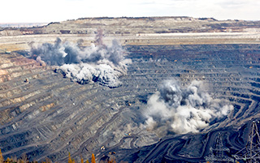
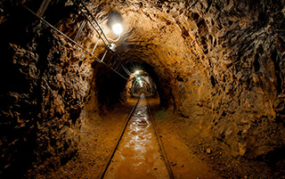

Буро-Взрывные работы
Буровзрывные работы производятся в различных горно-геологических и климатических условиях, на каменных карьерах, рудных месторождениях и угледобывающих предприятиях.
На каждом месторождении решается комплекс различных инженерных задач. Важнейшими из них являются: обеспечение процентного соотношения кусков различной крупности во взорванной горной массе и минимальное разубоживание полезного ископаемого при соблюдении требований промышленной и экологической безопасности.
При проектировании буровзрывных работ в целях выбора оптимального и экономически целесообразного варианта параметров буровзрывных работ применяется комплекс оборудования и программного обеспечения, позволяющий использовать 3D-модель уступа и буримых скважин и прогнозировать результаты массовых взрывов:
- гранулометрического состава
- параметров развала взорванной горной массы
- сейсмического действия массового взрыва (скорость смещения грунта в основании охраняемых объектов)
- действия ударной воздушной волны и др.
AV Group — один из мировых лидеров в комплексном сервисе буровзрывных и горных работ.
каменные работы

Открытые
На каждом месторождении решается комплекс различных инженерных задач. Важнейшими из них являются: обеспечение процентного соотношения кусков различной крупности во взорванной горной массе и минимальное разубоживание полезного ископаемого при соблюдении требований промышленной и экологической безопасности.

свернуть
Закрытые
Прогноз указанных выше параметров осуществляется с учетом горно-геологических характеристик и физико-механических свойств горных пород, слагаемых массив, а также характеристик применяемых взрывчатых веществ, с учетом конструкции скважинных зарядов, применяемых специальных средств при формировании скважинного заряда и забойки.
Угольные работы
Открытые
На каждом месторождении решается комплекс различных инженерных задач. Важнейшими из них являются: обеспечение процентного соотношения кусков различной крупности во взорванной горной массе и минимальное разубоживание полезного ископаемого при соблюдении требований промышленной и экологической безопасности.
Закрытые
Прогноз указанных выше параметров осуществляется с учетом горно-геологических характеристик и физико-механических свойств горных пород, слагаемых массив, а также характеристик применяемых взрывчатых веществ, с учетом конструкции скважинных зарядов, применяемых специальных средств при формировании скважинного заряда и забойки.
Рудные работы
Открытые
На каждом месторождении решается комплекс различных инженерных задач. Важнейшими из них являются: обеспечение процентного соотношения кусков различной крупности во взорванной горной массе и минимальное разубоживание полезного ископаемого при соблюдении требований промышленной и экологической безопасности.
Закрытые
Прогноз указанных выше параметров осуществляется с учетом горно-геологических характеристик и физико-механических свойств горных пород, слагаемых массив, а также характеристик применяемых взрывчатых веществ, с учетом конструкции скважинных зарядов, применяемых специальных средств при формировании скважинного заряда и забойки.